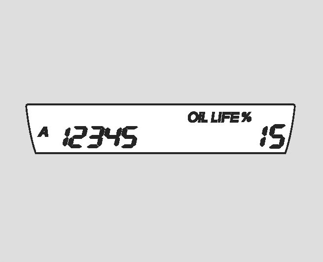
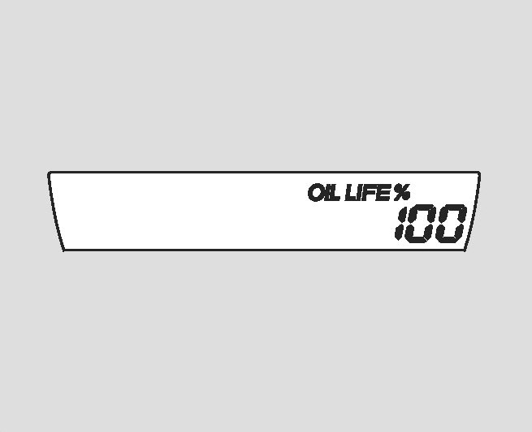

Maintenance Required Lamp/Indicator: Service and Repair
Resetting the Engine Oil Life Display
Reference:
- For information regarding interpreting the maintenance minder display refer to Maintenance Required Lamp/Indicator / Description and Operation / "Reading the Maintenance Minder".
Reset the display after completing the required maintenance service. You will see "OIL LIFE 100%" on the information display the next time you turn the ignition switch to the ON (II) position.
Reset the Maintenance Minder as follows:
1. Turn the ignition switch to the ON (II) position.
2. Press the SEL/RESET knob (or button if equipped) repeatedly until the engine oil life is displayed.

3. Press the SEL/RESET button for about 10 seconds. The engine oil life and the maintenance item code(s) will blink.

4. Press the SEL/RESET button for more than 5 seconds. The maintenance item code(s) will disappear, and the engine oil life will reset to "100."
Important Maintenance Precautions
If you complete the required service but do not reset the display, or reset the display without doing the service, the system will not show the proper maintenance intervals. This can lead to serious mechanical problems because there will no longer be an accurate record of when maintenance is needed.